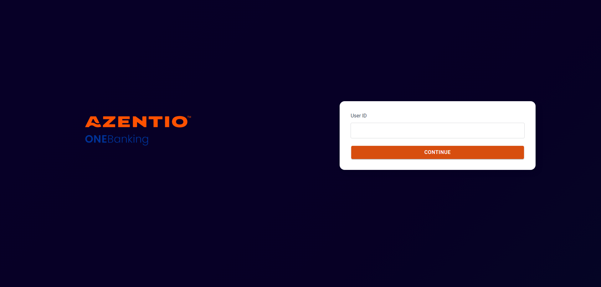
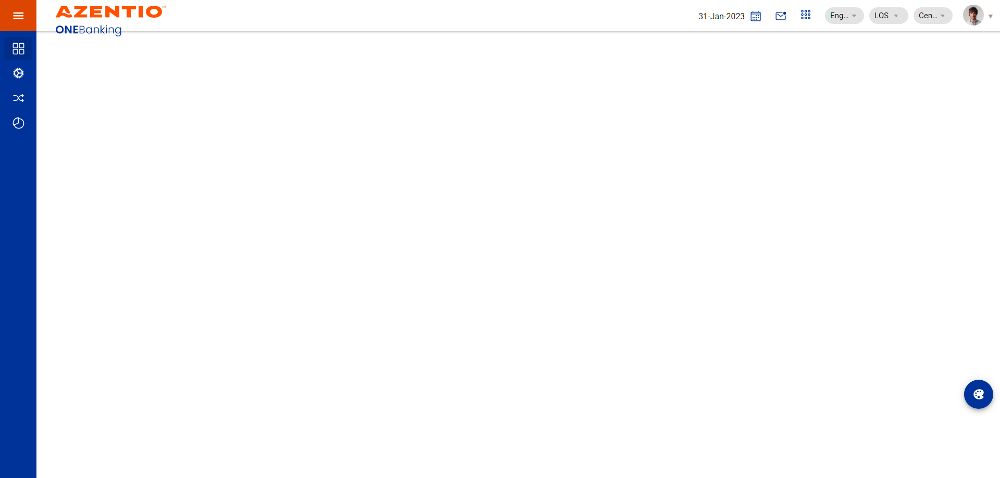
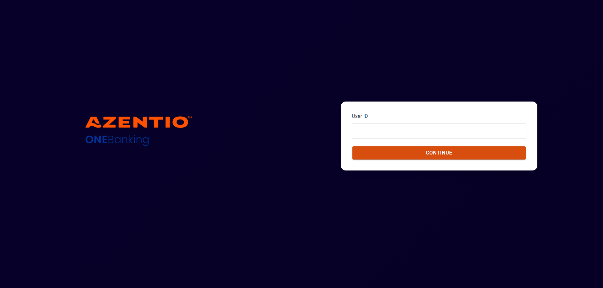
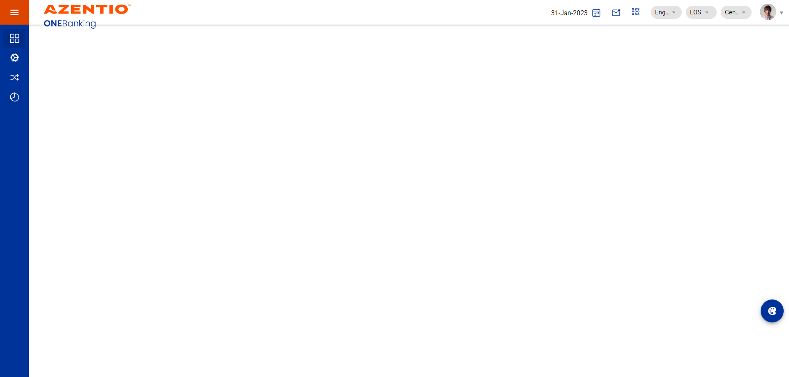
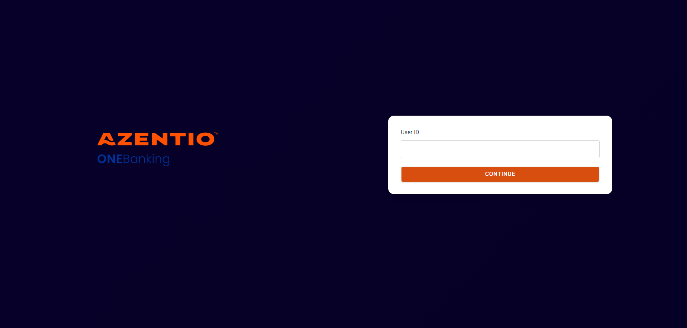
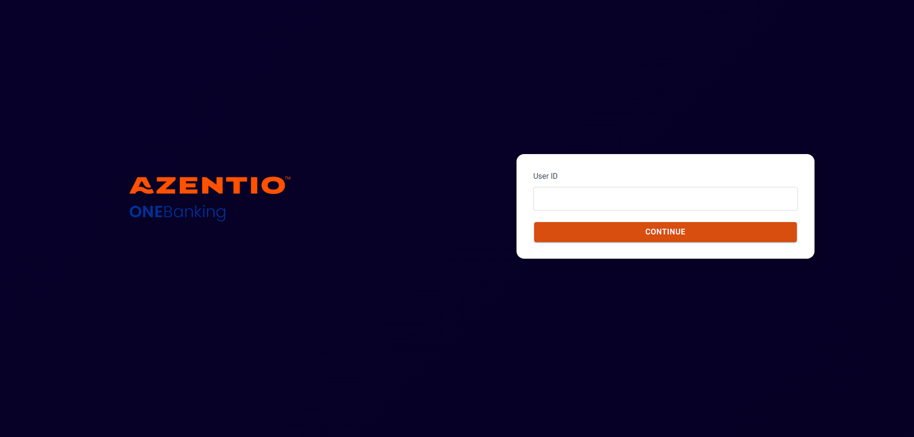
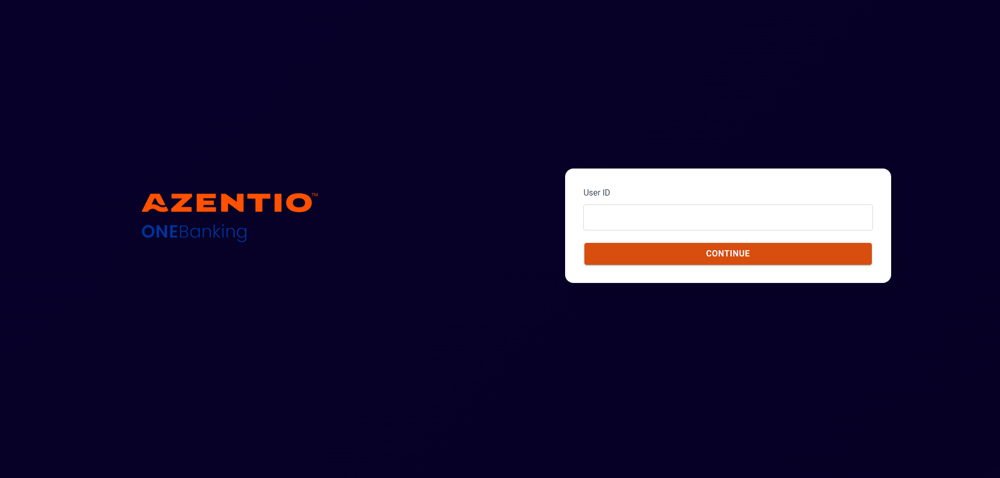

-
To check the App Data Check - Income feature
16:32:51 PM / 32:57:221 Fail
To check the App Data Check - Income feature
12.07.2023 16:32:51 12.07.2023 16:35:48 32:57:221 · #test-id=1FailIncome Summary Detail records for display only at Data Check stage.Given navigate the IJARA URLstepdefinitions.HooksClass.addScreenshot(io.cucumber.java.Scenario)screenshotAnd login with valid credentials-Data Checkstepdefinitions.HooksClass.addScreenshot(io.cucumber.java.Scenario)screenshot And User_608 get the test data for test case AT_INCD_01Step skippedAnd User_608 click the Mail box in ULS applicationStep skippedAnd User_608 click the Search button under inboxStep skippedAnd User_608 search the Ref id under inboxStep skippedAnd User_608 click the Entitle button under inboxStep skippedAnd User_608 click the Customer Financials tabStep skippedAnd User_608 click the Eye button under Customer Financials tabStep skippedAnd User_608 click the Eye button under Income section in Customer Financials TabStep skippedAnd User_608 validate Save button available under Income details screenStep skippedAnd User_608 validate Back button available under Income details screenStep skippedAnd User_608 validate Employment Type field available under Income details screenStep skippedAnd User_608 validate Lumpsum Amount field available under Income details screenStep skippedAnd User_608 validate Financial Year field available under Income details screenStep skippedAnd User_608 validate Filing Date field available under Income details screenStep skippedAnd User_608 validate Income field available under Income details screenStep skippedAnd User_608 validate Frequency field available under Income details screenStep skippedAnd User_608 validate Amount field available under Income details screenStep skippedAnd User_608 validate Defined % field available under Income details screenStep skippedAnd User_608 validate Adjusted % field available under Income details screenStep skippedAnd User_608 validate Amount Considered field available under Income details screenStep skippedAnd User_608 validate Action button available under Income details screenStep skippedAnd User_608 validate Total Income field available under Income details screenStep skippedAnd User_608 validate Total Income considered field available under Income details screenStep skippedAnd User_608 validate Salary credited to Bank field available under Income details screenStep skippedAnd User_608 validate Deduction field available under Income details screenStep skippedAnd User_608 validate Deduction Frequency field available under Income details screenStep skippedAnd User_608 validate Deduction Amount field available under Income details screenStep skippedAnd User_608 validate Deduction Def % field available under Income details screenStep skippedAnd User_608 validate Deduction Adj % field available under Income details screenStep skippedAnd User_608 validate Deduction Considered field available under Income details screenStep skippedAnd User_608 validate Deduction Action button field available under Income details screenStep skippedAnd User_608 validate Total Deduction field available under Income details screenStep skippedAnd User_608 validate Total Deduction Considered field available under Income details screenStep skippedAnd User_608 validate Currency field available under Income details screenStep skippedThen logout from the ijaraApplicationStep skippedFailTo verify the functionality of Save button and Back buttonGiven navigate the IJARA URLstepdefinitions.HooksClass.addScreenshot(io.cucumber.java.Scenario)screenshotAnd login with valid credentials-Data Checkstepdefinitions.HooksClass.addScreenshot(io.cucumber.java.Scenario)screenshot
And User_608 get the test data for test case AT_INCD_01Step skippedAnd User_608 click the Mail box in ULS applicationStep skippedAnd User_608 click the Search button under inboxStep skippedAnd User_608 search the Ref id under inboxStep skippedAnd User_608 click the Entitle button under inboxStep skippedAnd User_608 click the Customer Financials tabStep skippedAnd User_608 click the Eye button under Customer Financials tabStep skippedAnd User_608 click the Eye button under Income section in Customer Financials TabStep skippedAnd User_608 validate Save button available under Income details screenStep skippedAnd User_608 validate Back button available under Income details screenStep skippedAnd User_608 validate Employment Type field available under Income details screenStep skippedAnd User_608 validate Lumpsum Amount field available under Income details screenStep skippedAnd User_608 validate Financial Year field available under Income details screenStep skippedAnd User_608 validate Filing Date field available under Income details screenStep skippedAnd User_608 validate Income field available under Income details screenStep skippedAnd User_608 validate Frequency field available under Income details screenStep skippedAnd User_608 validate Amount field available under Income details screenStep skippedAnd User_608 validate Defined % field available under Income details screenStep skippedAnd User_608 validate Adjusted % field available under Income details screenStep skippedAnd User_608 validate Amount Considered field available under Income details screenStep skippedAnd User_608 validate Action button available under Income details screenStep skippedAnd User_608 validate Total Income field available under Income details screenStep skippedAnd User_608 validate Total Income considered field available under Income details screenStep skippedAnd User_608 validate Salary credited to Bank field available under Income details screenStep skippedAnd User_608 validate Deduction field available under Income details screenStep skippedAnd User_608 validate Deduction Frequency field available under Income details screenStep skippedAnd User_608 validate Deduction Amount field available under Income details screenStep skippedAnd User_608 validate Deduction Def % field available under Income details screenStep skippedAnd User_608 validate Deduction Adj % field available under Income details screenStep skippedAnd User_608 validate Deduction Considered field available under Income details screenStep skippedAnd User_608 validate Deduction Action button field available under Income details screenStep skippedAnd User_608 validate Total Deduction field available under Income details screenStep skippedAnd User_608 validate Total Deduction Considered field available under Income details screenStep skippedAnd User_608 validate Currency field available under Income details screenStep skippedThen logout from the ijaraApplicationStep skippedFailTo verify the functionality of Save button and Back buttonGiven navigate the IJARA URLstepdefinitions.HooksClass.addScreenshot(io.cucumber.java.Scenario)screenshotAnd login with valid credentials-Data Checkstepdefinitions.HooksClass.addScreenshot(io.cucumber.java.Scenario)screenshot And User_608 get the test data for test case AT_INCD_02Step skippedAnd User_608 click the Mail box in ULS applicationStep skippedAnd User_608 click the Search button under inboxStep skippedAnd User_608 search the Ref id under inboxStep skippedAnd User_608 click the Entitle button under inboxStep skippedAnd User_608 click the Customer Financials tabStep skippedAnd User_608 click the Eye button under Customer Financials tabStep skippedAnd User_608 click the Eye button under Income section in Customer Financials TabStep skippedAnd User_608 click the Save button under Income details screenStep skippedAnd User_608 validate the confirmation message under Income details screenStep skippedAnd User_608 click the Customer Financials tabStep skippedAnd User_608 click the Eye button under Customer Financials tabStep skippedAnd User_608 click the Eye button under Income section in Customer Financials TabStep skippedAnd User_608 click the Back button under Income details screenStep skippedThen logout from the ijaraApplicationStep skippedFailTo verify the fields available under income details section.Given navigate the IJARA URLstepdefinitions.HooksClass.addScreenshot(io.cucumber.java.Scenario)screenshotAnd login with valid credentials-Data Checkstepdefinitions.HooksClass.addScreenshot(io.cucumber.java.Scenario)screenshotAnd User_608 get the test data for test case AT_INCD_03Step skippedAnd User_608 click the Mail box in ULS applicationStep skippedAnd User_608 click the Search button under inboxStep skippedAnd User_608 search the Ref id under inboxStep skippedAnd User_608 click the Entitle button under inboxStep skippedAnd User_608 click the Customer Financials tabStep skippedAnd User_608 click the Eye button under Customer Financials tabStep skippedAnd User_608 click the Eye button under Income section in Customer Financials TabStep skippedAnd User_608 validate Employment Type field available under Income details screenStep skippedAnd User_608 validate Lumpsum Amount field available under Income details screenStep skippedAnd User_608 validate Financial Year field available under Income details screenStep skippedAnd User_608 validate Filing Date field available under Income details screenStep skippedAnd User_608 validate Income field available under Income details screenStep skippedAnd User_608 validate Frequency field available under Income details screenStep skippedAnd User_608 validate Amount field available under Income details screenStep skippedAnd User_608 validate Defined % field available under Income details screenStep skippedAnd User_608 validate Adjusted % field available under Income details screenStep skippedAnd User_608 validate Amount Considered field available under Income details screenStep skippedAnd User_608 validate Total Income field available under Income details screenStep skippedAnd User_608 validate Total Income considered field available under Income details screenStep skippedAnd User_608 validate Salary credited to Bank field available under Income details screenStep skippedAnd User_608 validate Deduction field available under Income details screenStep skippedAnd User_608 validate Deduction Frequency field available under Income details screenStep skippedAnd User_608 validate Deduction Amount field available under Income details screenStep skippedAnd User_608 validate Deduction Def % field available under Income details screenStep skippedAnd User_608 validate Deduction Adj % field available under Income details screenStep skippedAnd User_608 validate Deduction Considered field available under Income details screenStep skippedAnd User_608 validate Total Deduction field available under Income details screenStep skippedAnd User_608 validate Total Deduction Considered field available under Income details screenStep skippedThen logout from the ijaraApplicationStep skippedFailTo verify Empoyment details and Income details tab is mandatory for eligibilityGiven navigate the IJARA URLstepdefinitions.HooksClass.addScreenshot(io.cucumber.java.Scenario)screenshotAnd login with valid credentials-Data Checkstepdefinitions.HooksClass.addScreenshot(io.cucumber.java.Scenario)screenshot
And User_608 get the test data for test case AT_INCD_02Step skippedAnd User_608 click the Mail box in ULS applicationStep skippedAnd User_608 click the Search button under inboxStep skippedAnd User_608 search the Ref id under inboxStep skippedAnd User_608 click the Entitle button under inboxStep skippedAnd User_608 click the Customer Financials tabStep skippedAnd User_608 click the Eye button under Customer Financials tabStep skippedAnd User_608 click the Eye button under Income section in Customer Financials TabStep skippedAnd User_608 click the Save button under Income details screenStep skippedAnd User_608 validate the confirmation message under Income details screenStep skippedAnd User_608 click the Customer Financials tabStep skippedAnd User_608 click the Eye button under Customer Financials tabStep skippedAnd User_608 click the Eye button under Income section in Customer Financials TabStep skippedAnd User_608 click the Back button under Income details screenStep skippedThen logout from the ijaraApplicationStep skippedFailTo verify the fields available under income details section.Given navigate the IJARA URLstepdefinitions.HooksClass.addScreenshot(io.cucumber.java.Scenario)screenshotAnd login with valid credentials-Data Checkstepdefinitions.HooksClass.addScreenshot(io.cucumber.java.Scenario)screenshotAnd User_608 get the test data for test case AT_INCD_03Step skippedAnd User_608 click the Mail box in ULS applicationStep skippedAnd User_608 click the Search button under inboxStep skippedAnd User_608 search the Ref id under inboxStep skippedAnd User_608 click the Entitle button under inboxStep skippedAnd User_608 click the Customer Financials tabStep skippedAnd User_608 click the Eye button under Customer Financials tabStep skippedAnd User_608 click the Eye button under Income section in Customer Financials TabStep skippedAnd User_608 validate Employment Type field available under Income details screenStep skippedAnd User_608 validate Lumpsum Amount field available under Income details screenStep skippedAnd User_608 validate Financial Year field available under Income details screenStep skippedAnd User_608 validate Filing Date field available under Income details screenStep skippedAnd User_608 validate Income field available under Income details screenStep skippedAnd User_608 validate Frequency field available under Income details screenStep skippedAnd User_608 validate Amount field available under Income details screenStep skippedAnd User_608 validate Defined % field available under Income details screenStep skippedAnd User_608 validate Adjusted % field available under Income details screenStep skippedAnd User_608 validate Amount Considered field available under Income details screenStep skippedAnd User_608 validate Total Income field available under Income details screenStep skippedAnd User_608 validate Total Income considered field available under Income details screenStep skippedAnd User_608 validate Salary credited to Bank field available under Income details screenStep skippedAnd User_608 validate Deduction field available under Income details screenStep skippedAnd User_608 validate Deduction Frequency field available under Income details screenStep skippedAnd User_608 validate Deduction Amount field available under Income details screenStep skippedAnd User_608 validate Deduction Def % field available under Income details screenStep skippedAnd User_608 validate Deduction Adj % field available under Income details screenStep skippedAnd User_608 validate Deduction Considered field available under Income details screenStep skippedAnd User_608 validate Total Deduction field available under Income details screenStep skippedAnd User_608 validate Total Deduction Considered field available under Income details screenStep skippedThen logout from the ijaraApplicationStep skippedFailTo verify Empoyment details and Income details tab is mandatory for eligibilityGiven navigate the IJARA URLstepdefinitions.HooksClass.addScreenshot(io.cucumber.java.Scenario)screenshotAnd login with valid credentials-Data Checkstepdefinitions.HooksClass.addScreenshot(io.cucumber.java.Scenario)screenshot And User_608 get the test data for test case AT_INCD_04Step skippedAnd User_608 click the Mail box in ULS applicationStep skippedAnd User_608 click the Search button under inboxStep skippedAnd User_608 search the Ref id under inboxStep skippedAnd User_608 click the Entitle button under inboxStep skippedAnd User_608 click the Customer Financials tabStep skippedAnd User_608 click the Eye button under Customer Financials tabStep skippedAnd User_608 verify Employment details section available under Customer Financials tabStep skippedAnd User_608 click the eye button under Employment details section available in Customer Financials tabStep skippedAnd User_608 verify the Customer Employement page is available under Customer Financials tabStep skippedAnd User_608 click the Back button in Customer Employement screen under Customer Financials tabStep skippedAnd User_608 verfiy Income section available under Customer Financials tabStep skippedAnd User_608 click the Eye button under Income section in Customer Financials TabStep skippedThen logout from the ijaraApplicationStep skippedFailIncome Summary Detail records for display only at Data Check stage.Given navigate the IJARA URLstepdefinitions.HooksClass.addScreenshot(io.cucumber.java.Scenario)screenshotAnd login with valid credentials-Data Checkstepdefinitions.HooksClass.addScreenshot(io.cucumber.java.Scenario)screenshot
And User_608 get the test data for test case AT_INCD_04Step skippedAnd User_608 click the Mail box in ULS applicationStep skippedAnd User_608 click the Search button under inboxStep skippedAnd User_608 search the Ref id under inboxStep skippedAnd User_608 click the Entitle button under inboxStep skippedAnd User_608 click the Customer Financials tabStep skippedAnd User_608 click the Eye button under Customer Financials tabStep skippedAnd User_608 verify Employment details section available under Customer Financials tabStep skippedAnd User_608 click the eye button under Employment details section available in Customer Financials tabStep skippedAnd User_608 verify the Customer Employement page is available under Customer Financials tabStep skippedAnd User_608 click the Back button in Customer Employement screen under Customer Financials tabStep skippedAnd User_608 verfiy Income section available under Customer Financials tabStep skippedAnd User_608 click the Eye button under Income section in Customer Financials TabStep skippedThen logout from the ijaraApplicationStep skippedFailIncome Summary Detail records for display only at Data Check stage.Given navigate the IJARA URLstepdefinitions.HooksClass.addScreenshot(io.cucumber.java.Scenario)screenshotAnd login with valid credentials-Data Checkstepdefinitions.HooksClass.addScreenshot(io.cucumber.java.Scenario)screenshot And User_608 get the test data for test case AT_INCD_05Step skippedAnd User_608 click the Mail box in ULS applicationStep skippedAnd User_608 click the Search button under inboxStep skippedAnd User_608 search the Ref id under inboxStep skippedAnd User_608 click the Entitle button under inboxStep skippedAnd User_608 click the Customer Financials tabStep skippedAnd User_608 click the Eye button under Customer Financials tabStep skippedAnd User_608 verify Self Employed customer available under Income section in Customer Financials TabStep skippedAnd User_608 verify Self Employed income field is available under Income section in Customer Financials TabStep skippedThen logout from the ijaraApplicationStep skippedAnd User_608 invoke soft assert in Income details screen under Customer Financials tab at Ijarah Data Check stageStep skippedFailIncome Summary Detail records for display only at Data Check stage.Given navigate the IJARA URLstepdefinitions.HooksClass.addScreenshot(io.cucumber.java.Scenario)screenshotAnd login with valid credentials-Data Checkstepdefinitions.HooksClass.addScreenshot(io.cucumber.java.Scenario)screenshot
And User_608 get the test data for test case AT_INCD_05Step skippedAnd User_608 click the Mail box in ULS applicationStep skippedAnd User_608 click the Search button under inboxStep skippedAnd User_608 search the Ref id under inboxStep skippedAnd User_608 click the Entitle button under inboxStep skippedAnd User_608 click the Customer Financials tabStep skippedAnd User_608 click the Eye button under Customer Financials tabStep skippedAnd User_608 verify Self Employed customer available under Income section in Customer Financials TabStep skippedAnd User_608 verify Self Employed income field is available under Income section in Customer Financials TabStep skippedThen logout from the ijaraApplicationStep skippedAnd User_608 invoke soft assert in Income details screen under Customer Financials tab at Ijarah Data Check stageStep skippedFailIncome Summary Detail records for display only at Data Check stage.Given navigate the IJARA URLstepdefinitions.HooksClass.addScreenshot(io.cucumber.java.Scenario)screenshotAnd login with valid credentials-Data Checkstepdefinitions.HooksClass.addScreenshot(io.cucumber.java.Scenario)screenshot And User_608 get the test data for test case AT_INCD_06Step skippedAnd User_608 click the Mail box in ULS applicationStep skippedAnd User_608 click the Search button under inboxStep skippedAnd User_608 search the Ref id under inboxStep skippedAnd User_608 click the Entitle button under inboxStep skippedAnd User_608 click the Customer Financials tabStep skippedAnd User_608 click the Eye button under Customer Financials tabStep skippedAnd User_608 verify the Salaried customer available under Income section in Customer Financials TabStep skippedThen logout from the ijaraApplicationStep skippedAnd User_608 invoke soft assert in Income details screen under Customer Financials tab at Ijarah Data Check stageStep skipped
And User_608 get the test data for test case AT_INCD_06Step skippedAnd User_608 click the Mail box in ULS applicationStep skippedAnd User_608 click the Search button under inboxStep skippedAnd User_608 search the Ref id under inboxStep skippedAnd User_608 click the Entitle button under inboxStep skippedAnd User_608 click the Customer Financials tabStep skippedAnd User_608 click the Eye button under Customer Financials tabStep skippedAnd User_608 verify the Salaried customer available under Income section in Customer Financials TabStep skippedThen logout from the ijaraApplicationStep skippedAnd User_608 invoke soft assert in Income details screen under Customer Financials tab at Ijarah Data Check stageStep skipped
Started
Dec 7, 2023 04:32:47 PM
Ended
Dec 7, 2023 04:35:48 PM
Features Passed
0
Features Failed
1
Features
Scenarios
Steps
Timeline
Tags
| Name | Passed | Failed | Skipped | Others | Passed % |
|---|---|---|---|---|---|
| @AT_INCD_01 | 0 | 1 | 0 | 0 | 0% |
| @AT_INCD_06 | 0 | 1 | 0 | 0 | 0% |
| @AT_INCD_03 | 0 | 1 | 0 | 0 | 0% |
| @AT_INCD_04 | 0 | 1 | 0 | 0 | 0% |
| @AT_INCD_02 | 0 | 1 | 0 | 0 | 0% |
| @AT_INCD_05 | 0 | 1 | 0 | 0 | 0% |
System/Environment
| Name | Value |
|---|---|
| version | 10 |
| os | windows |
-
@AT_INCD_01
1 tests
@AT_INCD_01
1 failedStatus Timestamp TestName Fail 16:32:51 PM Income Summary Detail records for display only at Data Check stage. To check the App Data Check - Income feature.Income Summary Detail records for display only at Data Check stage. -
@AT_INCD_06
1 tests
@AT_INCD_06
1 failedStatus Timestamp TestName Fail 16:35:22 PM Income Summary Detail records for display only at Data Check stage. To check the App Data Check - Income feature.Income Summary Detail records for display only at Data Check stage. -
@AT_INCD_03
1 tests
@AT_INCD_03
1 failedStatus Timestamp TestName Fail 16:33:56 PM To verify the fields available under income details section. To check the App Data Check - Income feature.To verify the fields available under income details section. -
@AT_INCD_04
1 tests
@AT_INCD_04
1 failedStatus Timestamp TestName Fail 16:34:22 PM To verify Empoyment details and Income details tab is mandatory for eligibility To check the App Data Check - Income feature.To verify Empoyment details and Income details tab is mandatory for eligibility -
@AT_INCD_02
1 tests
@AT_INCD_02
1 failedStatus Timestamp TestName Fail 16:33:32 PM To verify the functionality of Save button and Back button To check the App Data Check - Income feature.To verify the functionality of Save button and Back button -
@AT_INCD_05
1 tests
@AT_INCD_05
1 failedStatus Timestamp TestName Fail 16:34:55 PM Income Summary Detail records for display only at Data Check stage. To check the App Data Check - Income feature.Income Summary Detail records for display only at Data Check stage.
-
java.lang.NullPointerException
1 tests
java.lang.NullPointerException
1 failedStatus Timestamp TestName Fail 16:33:08 PM And login with valid credentials-Data Check To check the App Data Check - Income feature.Income Summary Detail records for display only at Data Check stage..And login with valid credentials-Data CheckFail 16:33:40 PM And login with valid credentials-Data Check To check the App Data Check - Income feature.To verify the functionality of Save button and Back button.And login with valid credentials-Data CheckFail 16:34:05 PM And login with valid credentials-Data Check To check the App Data Check - Income feature.To verify the fields available under income details section..And login with valid credentials-Data CheckFail 16:34:30 PM And login with valid credentials-Data Check To check the App Data Check - Income feature.To verify Empoyment details and Income details tab is mandatory for eligibility.And login with valid credentials-Data CheckFail 16:35:04 PM And login with valid credentials-Data Check To check the App Data Check - Income feature.Income Summary Detail records for display only at Data Check stage..And login with valid credentials-Data CheckFail 16:35:31 PM And login with valid credentials-Data Check To check the App Data Check - Income feature.Income Summary Detail records for display only at Data Check stage..And login with valid credentials-Data Check